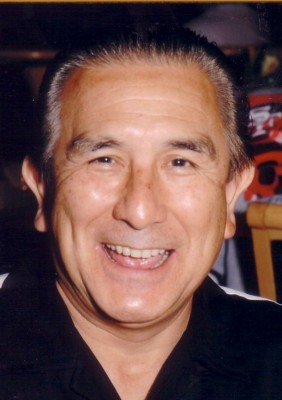

#4695 Punch-Drunk Love

 IMDB-Wertung: 7.3 / 10
IMDB-Wertung: 7.3 / 10  Tomatometer: 80
Tomatometer: 80  Metascore: 0
Metascore: 0 
Der Jungunternehmer Barry Egan wird in der Arbeit durch die häufigen Anrufe seiner sieben Schwestern gestört. Als er zum Familientreffen bei einer der Schwestern eingeladen wird, rastet er aus und zertrümmert einige Terrassenscheiben. Am Abend will er sich durch Telefonsex entspannen. Er gibt einer entsprechenden Agentur seine Telefonnummer und seine Kreditkartennummer, bald wird er von einer Frau zurückgerufen. Am nächsten Morgen ruft die Frau erneut an und verlangt zusätzliches Geld von Egan. Als er ablehnt, droht sie, seine Freundin anzurufen. Ihr Chef schickt ihm vier Brüder hinterher, um aus ihm das Geld herauszuprügeln.
Jahr: 2002
Dauer: 95 Minuten
FSK: 12
Land: USA Studio: Columbia PicturesTonspuren: DD2.0 - ,
Untertitel: Deutsch, Englisch,
Auflösung: 1080p (1920x800) Größe: 9185 MB
Genre: Komödie, Drama, Liebe, Thriller
Regisseur:  Paul Thomas Anderson
Paul Thomas Anderson
Drehbuch: Jon Lucas
Soundtrack:
Darsteller:
 Adam Sandler als Barry Egan
Adam Sandler als Barry Egan Don McManus als Plastic
Don McManus als Plastic Emily Watson als Lena Leonard
Emily Watson als Lena Leonard Luis Guzmán als Lance
Luis Guzmán als Lance-  Rico Bueno als Rico
- Julie Hermelin als Kathleen
 Mary Lynn Rajskub als Elizabeth
Mary Lynn Rajskub als Elizabeth Robert Smigel als Walter the Dentist
Robert Smigel als Walter the Dentist Philip Seymour Hoffman als Dean Trumbell
Philip Seymour Hoffman als Dean Trumbell- David H. Stevens als David
- Nathan Stevens als Nate
- Andrew Higgs als Restaurant Manager
- Michael Immel als Man on Plane
 Jonathan Loughran als Wrong Number
Jonathan Loughran als Wrong Number Ryder Davis als Customer , uncredited
Ryder Davis als Customer , uncredited- Sam Polson als Airport Traveler , uncredited
- Wells Rosales als Leo , uncredited
- Shelley Waggener als Co-Worker , uncredited
- Jason Andrews als Operator Carter
- David Schrempf als Customer #1
- Seann Conway als Customer #2
- Hazel Mailloux als Rhonda
- Karen Kilgariff als Anna
- Salvador Curiel als Sal
- Jorge Barahona als Jorge
- Ernesto Quintero als Ernesto
- Julius Steuer als Mechanic
- Lisa Spector als Susan
- Nicole Gelbard als Nicole
- Mia Weinberg als Gilda
- Karen Hermelin als Anna
- Larry Ring als Steve - Brother-in-Law
- Kerry Gelbard als Richard - Brother-in-Law
- Ashley Clark als Phone Sex Sister
- Alan Parry als Member of After Eden Band
- John E. Beck als Member of After Eden Band
- Eddie Wayne Howell als Member of After Eden Band
- Taylor J. Thomas als Member of After Eden Band
- Bobby Bluehouse als After Eden Sound Man
- Jimmy Stevens als Jim
- Carol Mirelez als Phone Sex Girl #1 - Utah
- June Sepulveda als Phone Sex Girl #2 - Utah
- Rogerlyn Kanealii Wakinekona als Lena's Apartment Receptionist
- Mike D. Stevens als Mike D.
- Catherine Cooley als Flight Attendant
- Ross Lasi Tanoai als Cab Driver
- Kaila als Member of Ladies K Band
- Ku'Ulei als Member of Ladies K Band
- Sissy Lake als Hula Dancer
- Marie Irwin als Lena's Nurse
Datei: X:\2002\Punch-Drunk Love (2002, FSK12, 1920x800).mkv seit 04.11.2016
Festplatte: HD 1996-2002
 Es gibt insgesamt 93 Filme in der Gruppe '2002'
Es gibt insgesamt 93 Filme in der Gruppe '2002'